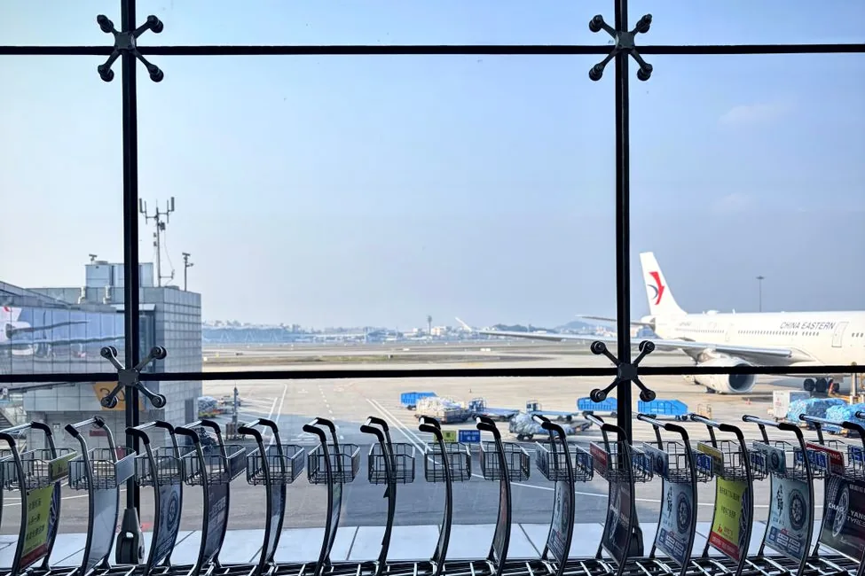

Answer first: the cheapest fare and the cheapest trip are not the same thing, and the gap between them is almost never about deal-hunting. It’s structural. It is one ticket or two. It is which airport you clear immigration at. It is whether your travelling companion’s passport works the same way yours does.
In this guide9 sections
- 1. One ticket, or two separate ones
- 2. You clear immigration at your first point of entry, not your destination
- 3. Transiting a country is not the same as entering it
- 4. Your passport is not the only passport on the booking
- 5. The connection time shown is not the time you have
- 6. Carry-on limits are real, and enforced differently
- 7. The secondary airport can cost more than it saves
- How to check this before you book, in order
- Frequently asked questions
None of that appears in the price you compare. All of it decides whether the booking actually works.
What follows is seven failure modes, not seven tips. I’ve deliberately kept the list short — there are dozens of angles you could consider when booking a flight, and most of them cost you nothing when you get them wrong. These seven are the ones that turn a saved ¥8,000 into a missed connection, a refused boarding, or a visa you discover you needed at the check-in desk.

1. One ticket, or two separate ones
This is the single most consequential thing about a multi-leg journey, and comparison sites rarely make it obvious.
On one ticket, the airline owns the whole journey. If the first leg is late and you miss the second, rebooking you is their problem, usually at no cost. Your checked bags are normally tagged through to the final destination, so you don’t collect and re-check them in the middle.
On two separate tickets — very common when you pair a cheap long-haul fare with a budget domestic leg — you own the risk. Miss the second flight because the first was delayed and the second airline owes you nothing; you bought a seat on a plane and did not turn up for it. You will also usually collect your bags and check in again, which eats far more time than people allow.
Separate tickets can still be the right call when the saving is large and the gap is generous. Just price the risk honestly: would you be able to buy a replacement ticket on the spot? If not, the cheaper option is not cheaper.
2. You clear immigration at your first point of entry, not your destination
If you fly into a country’s smaller gateway airport and connect onward domestically, you clear immigration and customs at that first airport — not at the city you’re actually going to.
This catches people constantly, because the itinerary reads like one journey to one place. In practice, at the first airport you will:
- queue for immigration, possibly at an unhelpful hour
- collect checked bags and take them through customs
- clear biosecurity or agricultural inspection, which in countries like Australia and New Zealand is thorough and not quick
- often change terminal to reach the domestic departure
That last one deserves its own line. International and domestic terminals are frequently separate buildings requiring a shuttle. A connection that reads as comfortable on paper can be genuinely tight once immigration, bags, biosecurity and a terminal transfer are stacked inside it — especially on an early-morning arrival when staffing is thin.
3. Transiting a country is not the same as entering it
A layover is not automatically a visit. Most airports let you stay airside — inside the restricted zone, never officially entering — and for that, a visa usually isn’t needed even where entering would require one.
Hong Kong is the clearest example: 24-hour airside transit is visa-free for almost every nationality, with a short list of roughly fifteen exceptions who need a visa even to transit. The conditions matter, though: you must stay airside and hold an onward boarding pass.
Two practical consequences:
- If a nationality in your party needs a visa to enter a transit country, an airside connection may still be completely fine — check the transit rule specifically, not the entry rule.
- If your layover involves leaving the airport, changing airports, or an overnight in a hotel on the landside, you are entering that country and the entry rules apply in full.
4. Your passport is not the only passport on the booking
This is the perspective most guides skip entirely, and the one that causes the most last-minute panic: two people travelling together can face completely different processes for the same trip.
Australia shows the range well. There are three different visitor permissions, and which one applies depends entirely on the passport:
- the ETA (subclass 601) — for passport holders from the US, Canada, Japan, South Korea, Singapore, Malaysia, Hong Kong, Taiwan and others; applied for through an app, and it requires a biometric ePassport with an NFC chip
- the eVisitor (subclass 651) — broadly for European passports, applied for online
- the Visitor visa (subclass 600) — open to all nationalities, and the route for anyone the two electronic options don’t cover
The difference is not cosmetic. One traveller can be approved on their phone in minutes; the other faces a full application with supporting documents and a processing time measured in weeks. Book non-refundable flights before that is resolved and you are gambling with the whole trip.
Rules here also move in the traveller’s favour sometimes, which is an argument for checking rather than assuming: Australia removed the nationality criteria for arrival SmartGates in June 2025, so eligibility now rests on holding an ePassport or machine-readable passport rather than on where it was issued.
If you’re travelling with someone on a different passport, work out their requirements first — theirs is the constraint, not yours.
5. The connection time shown is not the time you have
A two-hour connection is two hours between wheels-down and wheels-up — not two hours of walking-around time. Subtract taxiing and disembarking, and anything from section 2 that applies.
A reasonable way to sanity-check it: write down what actually has to happen, in order, and give each step a real number. Disembark. Immigration. Bags. Customs. Terminal change. Check-in for the next leg. Security. Gate. If the total is close to the connection time, it isn’t a connection — it’s a hope.
This is also where one-ticket-or-two returns. On one ticket, a blown connection is inconvenient. On two, it’s a new ticket.
6. Carry-on limits are real, and enforced differently
Budget carriers enforce cabin baggage far more strictly than full-service airlines, and the specifics differ enough to catch experienced travellers.
Two Australian examples, current as of 2026, show how much the details vary:
- Jetstar: one cabin bag up to 56 × 36 × 23 cm, with a 7 kg limit that includes your personal item — and it is weighed at the gate. (Jetstar has announced a move to a size-based system from February 2027, so this is one to re-check.)
- Virgin Australia: economy carry-on rose from 7 kg to 8 kg in February 2026, for one carry-on bag plus a personal item.
One kilo and one bag sounds trivial until you are repacking on a terminal floor. The rule that catches people is not the weight itself but whether the personal item counts toward it — check that line specifically for every carrier on your itinerary, because a single trip can involve three different policies.
If your bags are checked through to a final destination but you have a long layover, remember you’ll only have what’s in the cabin. Our pre-flight checklist covers the 48 hours before you fly, and the airport security checklist covers what gets flagged at the belt.
7. The secondary airport can cost more than it saves
Budget airlines often fly to secondary airports well outside the city they’re sold as serving. The fare looks excellent. The transfer is an hour or more each way, costs real money, and may not run at the hour your flight lands.
Do the arithmetic before booking: fare saving, minus transfer cost both ways, minus the value of two or three hours. Sometimes it still wins — especially if the alternative was expensive anyway. Often it doesn’t, and it’s the arrival at 1am with no train that people remember.
How to check this before you book, in order
- Confirm entry permission for every passport in the party — on the destination’s official government portal, not an intermediary that ranks above it in search results.
- Check the transit rule separately for any country you connect through.
- Decide one ticket or two, and if two, whether you could absorb buying a replacement.
- Map the connection step by step with real numbers.
- Read the carry-on line for every carrier on the itinerary.
- Only then compare fares — and compare flexible dates, which moves the price more than any booking trick. You can search flexible dates across airlines here and let the calendar view show what a day’s flexibility is worth on your route.
Two things worth settling in the same sitting: cover you actually understand — missed-connection and delay cover is precisely what separate tickets expose you to, and you can compare policies here — and data for the arrival, since immigration queues are a poor time to discover you have no signal. Our eSIM vs physical SIM guide covers the choice, or you can set one up before you fly.
For the wider budget picture, how to save money on international travel ranks the levers that actually move the total, and if this is your first long-haul trip, the first international trip checklist is a calmer place to start.
Frequently asked questions
Is it safe to book two separate flights instead of one ticket?
It can be, if the gap is generous and you could afford to buy a replacement ticket on the spot. On separate tickets the second airline has no obligation to you if the first runs late, and you will normally collect and re-check your bags between them.
Where do I clear immigration on a connecting flight?
At your first point of entry into that country, not your final destination. Immigration, baggage collection, customs and often biosecurity and a terminal change all happen at the first airport, inside your connection time.
Do I need a visa for a layover?
Often not. Staying airside for a short connection is visa-free for most nationalities in most places, and Hong Kong's 24-hour airside transit is visa-free for almost everyone with around fifteen exceptions. You must stay airside and hold an onward boarding pass; leaving the airport means you are entering the country and full entry rules apply.
What if I am travelling with someone on a different passport?
Check their requirements first, because theirs is the binding constraint. For Australia one passport might qualify for an app-based ETA (subclass 601) while another needs a Visitor visa (subclass 600) with supporting documents and a far longer processing time.
How strict are carry-on weight limits really?
Strict on budget carriers and inconsistent between them. Jetstar's 7kg includes your personal item and is weighed at the gate, while Virgin Australia moved economy to 8kg plus a personal item in February 2026. Check the personal-item line for every carrier on your itinerary.
Sources & further reading
- Jetstar — published carry-on baggage allowance, 2026 (and the announced 2027 change to size-based limits)
- Virgin Australia — carry-on baggage allowance change effective February 2026
- Hong Kong Immigration Department — 24-hour airside transit conditions
- Australian Department of Home Affairs — ETA (601), eVisitor (651) and Visitor visa (600); SmartGate eligibility change, June 2025
Entry rules, transit conditions and baggage allowances change, and they depend on your nationality and your exact itinerary. This is general preparation guidance, not immigration advice — confirm everything on official sources for the passports you are actually travelling on. This article contains affiliate links; if you book through them we may earn a commission at no extra cost to you.
Keep reading on Gently Yonder
- How to Save Money on International Travel The seven levers that actually move the number — paying in local currency, eSIM over roaming, flexible dates, and the pass arithmetic.
- Pre-Flight Checklist for Passengers The 25-step check for the 48 hours before you fly — documents, connectivity, security, and the night-before list.
- Your First International Trip: A Calm Pre-Flight Checklist The reassuring first-timer's checklist — passport, entry rules, money, connectivity, and packing, without the overwhelm.
- Is Travel Insurance a Rip-Off? A losing bet on average, yet a rational buy — the economics of when insurance is worth it and when it's a waste.
- Airport Security Checklist (12-Point Pre-Flight) A 12-point pre-flight verification covering documents, liquids, electronics, and prohibited items.
- eSIM vs Physical SIM Card for Travel Which to buy — activation timing, cost, coverage, keeping your home number, and when a local SIM still wins.